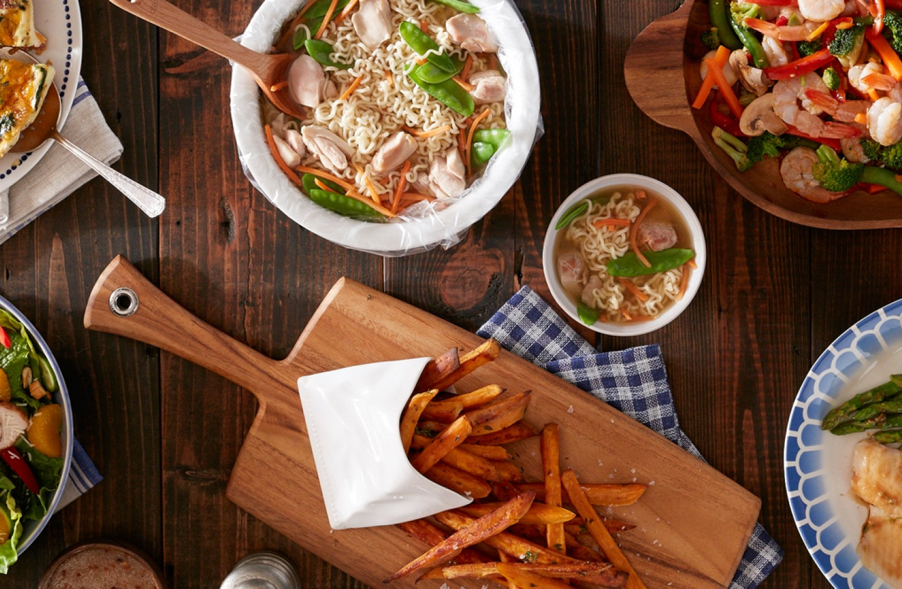
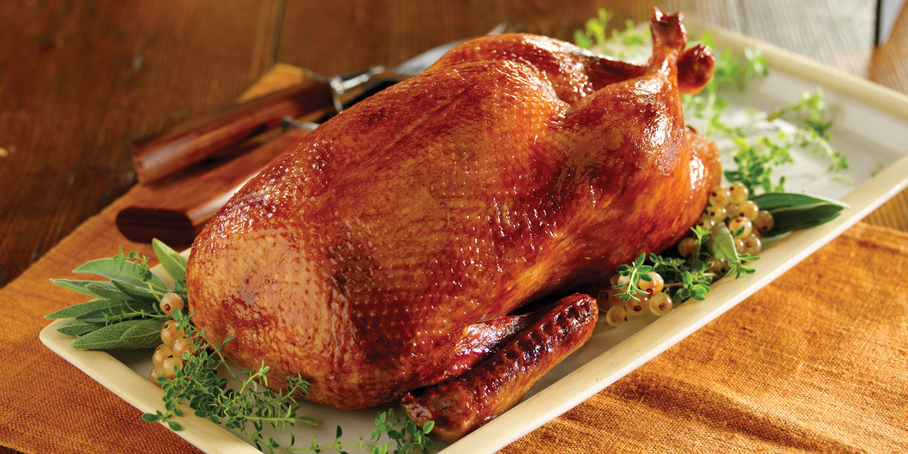

Eduardo's Cooking Recipies
Cooking made easy
This is a page where I'll publish some of my favorite cooking recipes as I discover them myself
Feel free to cook the one you like the most! (I recommend checking out the Roasted Duck)

Top 25 Cooking Recepies

Roasted Duck Recipe
About me